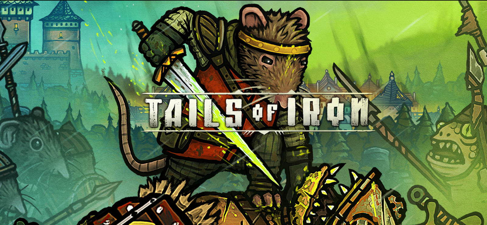

Tails of Iron es una aventura RPG epica con un combate brutal que
castiga al jugador con cada error.
Personajes Principales
Familia real
-
Redgi - Protagonista, el más joven de los
hermanos. Debe recuperar su reino.
-
Rey Rattus IV - Padre de Redgi. Asesinado por
Green Wart al inicio del juego.
-
Denis el Valiente - Hermano mayor, comandante
militar.
-
Bam-Bam el Herrero - Hermano mediano. Forja
equipamiento para Redgi.
-
Rem-Rem el Glotón - Hermano cocinero. Provee
mejoras de salud mediante banquetes.
-
Reginald - Tío y mentor de Redgi. Entrena a los
jóvenes en combate.
Legiones del Pantano
-
Green Wart - Líder supremo (sapo). Ordenó el
exterminio de los ratones.
-
Boggy Boggitt - General sapo con armadura de
huesos. Usa un martillo gigante.
-
Grey Prince - Mercenario rana. Ataca con dardos
venenosos desde las sombras.
-
Reina Mosca - Enemiga voladora. Controla un
enjambre de insectos.
-
Escarabajo Tanque - Criatura blindada. Carga
contra el jugador rompiendo defensas.
-
Necro-Gusano - Parásito zombi. Revive cadáveres
de enemigos derrotados.
Curiosidades del Juego
Inspiración en Ratas y Medievalismo
El juego mezcla la estética medieval con un mundo habitado por
ratas y otros animales antropomórficos, inspirado en clásicos como
"Redwall".
Combate Desafiante
El sistema de combate es similar al de "Dark Souls", con énfasis
en esquivar, bloquear y ataques precisos.
Narrado por Geralt de Rivia
El actor Doug Cockle (voz de Geralt en The Witcher) narra la
historia de Tails of Iron.